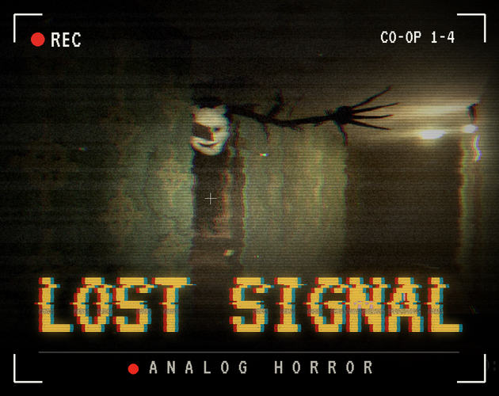
Lost Signal - Analog Horror
Channel 9 is still on the air. Bring a camcorder and up to three friends.
nearQ
Windows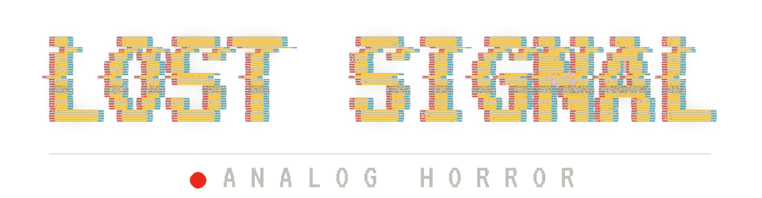
| Status | In development |
| Platforms | Windows |
| Author | nearQ |
| Genre | Survival |
| Tags | Analog Horror, Co-op, Creepy, First-Person, Found Footage, Horror, Multiplayer, Psychological Horror, Scary, vhs |
| Average session | About a half-hour |
| Languages | English, Spanish; Castilian |
| Inputs | Keyboard, Mouse |
| Multiplayer | Ad-hoc networked multiplayer |
| Player count | Singleplayer, Multiplayer · 1 - 4 |
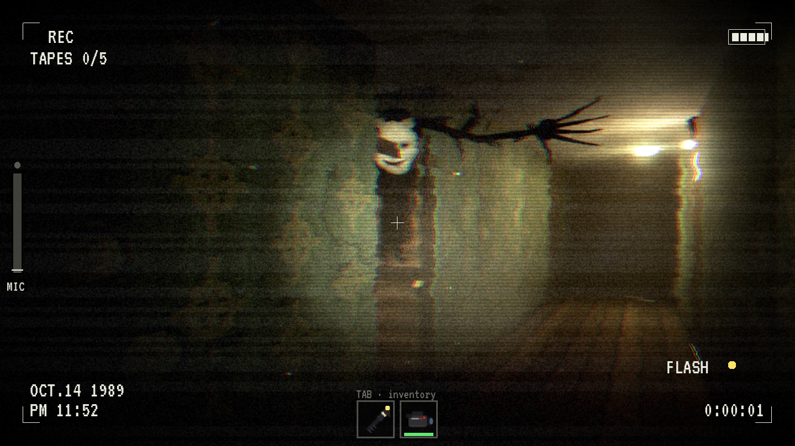
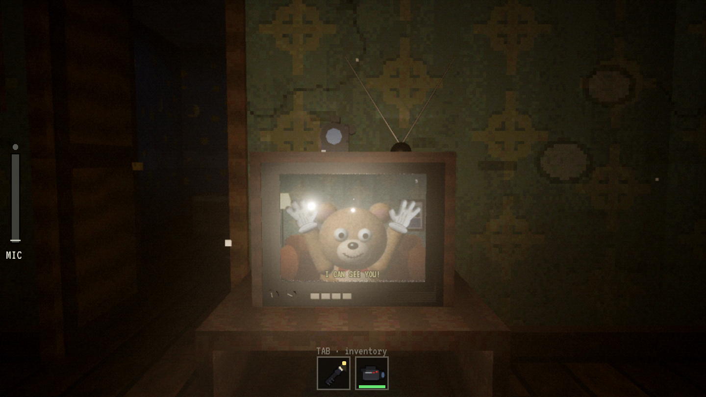
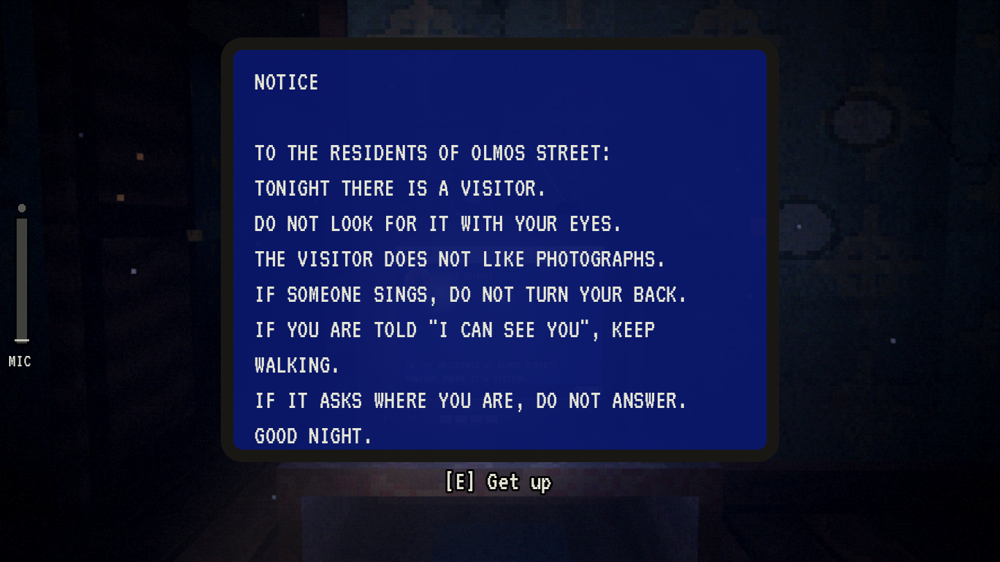
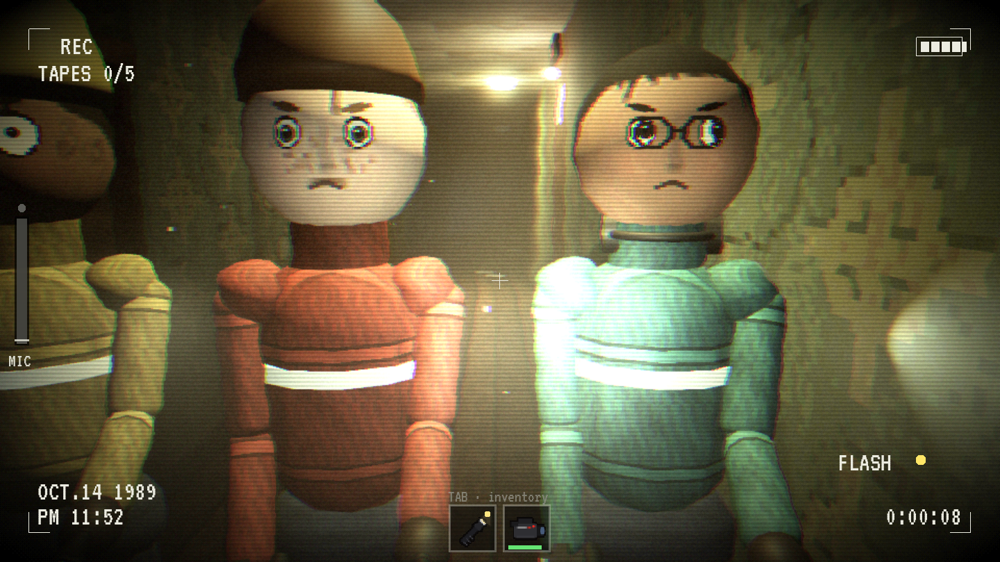
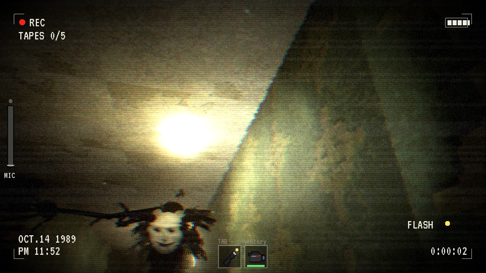
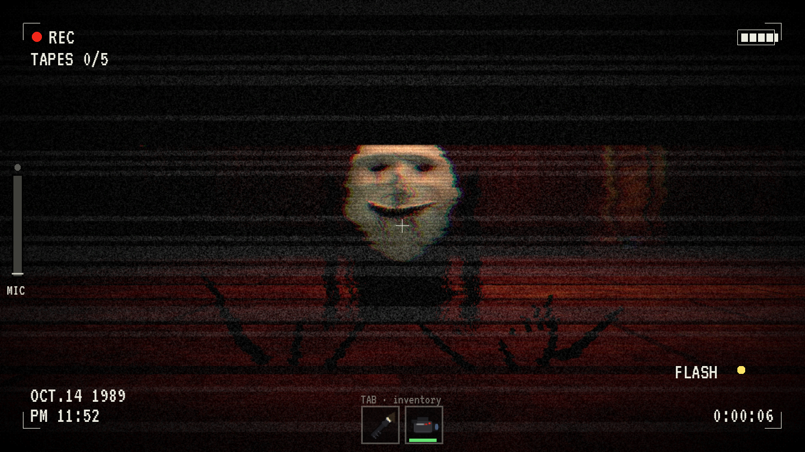
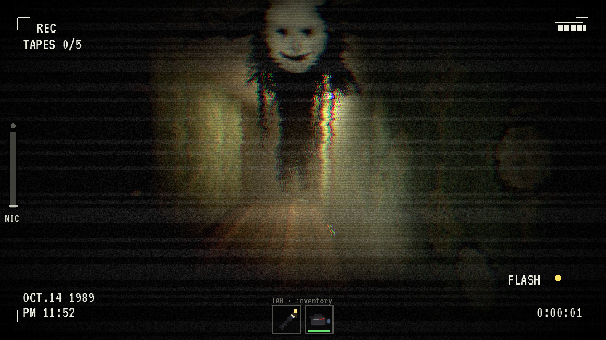
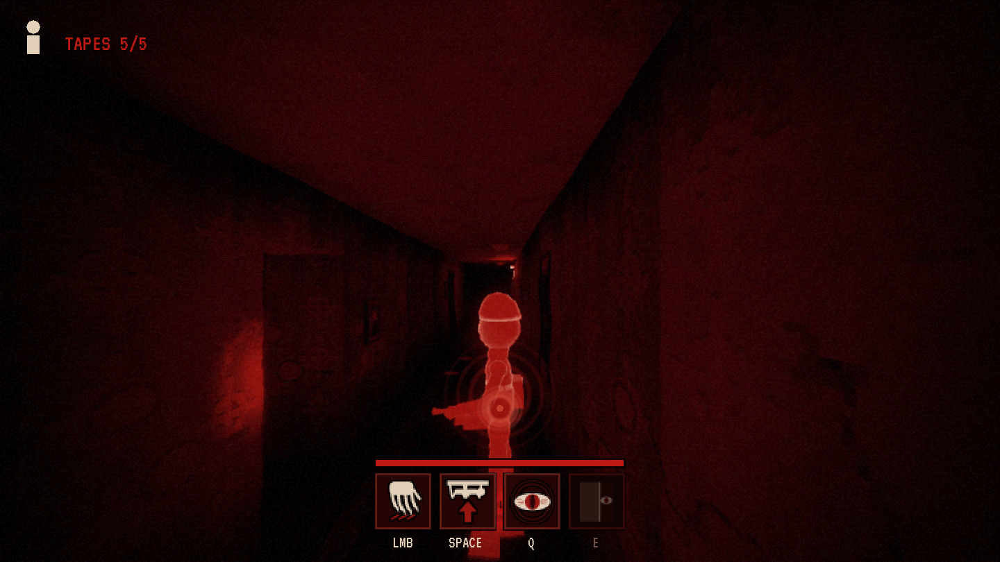
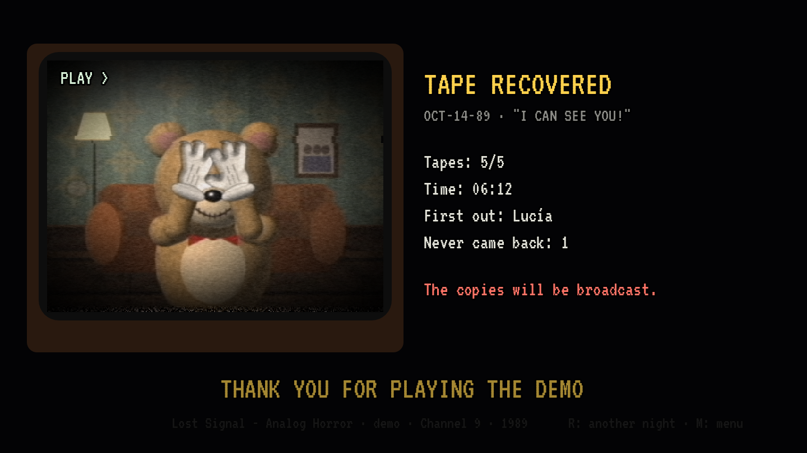
Unzip and run LostSignal.exe. If Windows SmartScreen warns you, click More info → Run anyway (the game is not signed yet). Updates are installed from inside the game.
Descomprime y abre LostSignal.exe. Si Windows SmartScreen avisa, pulsa Más información → Ejecutar de todas formas. Las actualizaciones se instalan desde el propio juego.
Así sale la portada (630×500, mostrada a 315×250) junto a otros juegos en las listas de itch.

Comments
my friend stopped filming for ONE second